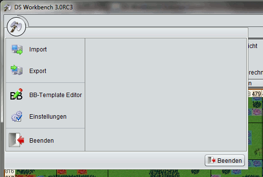

Das Anwendungsmenü |
|
|  | |
| Das Anwendungsmenü erscheint, wenn ihr auf das Axtsymbol in der linken oberen Ecke des Hauptfensters klickt. Von hier aus habt ihr Zugriff auf alle Einstellungen die DS Workbench bietet sowie auf die Export- und Import-Funktionen, die es euch erlauben, Daten die ihr mit DS Workbench erstellt habt weiterzugeben oder Daten die ihr von anderen Benutzern bekommen habt einzulesen. |